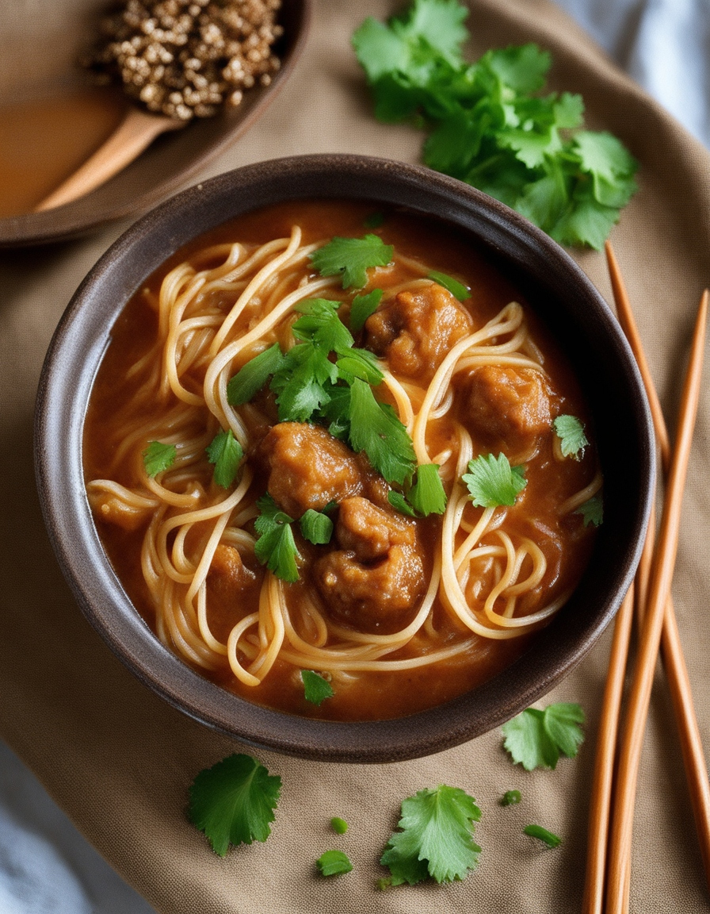
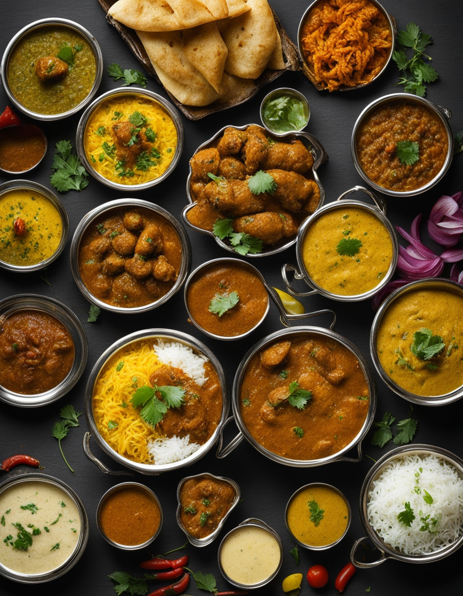
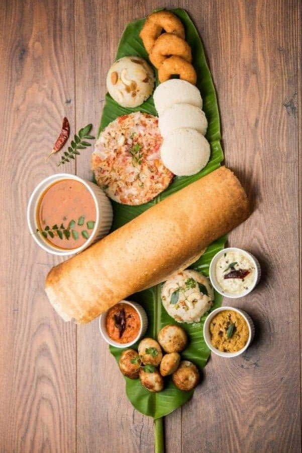
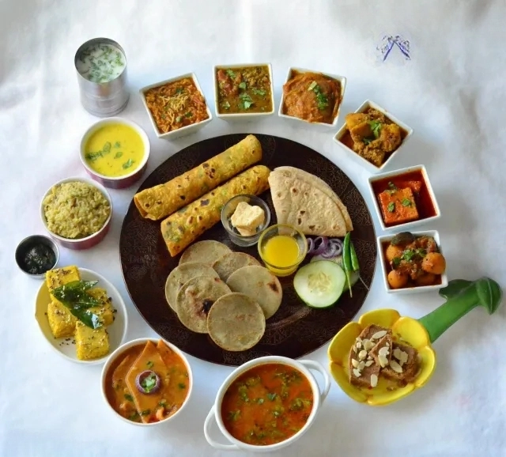
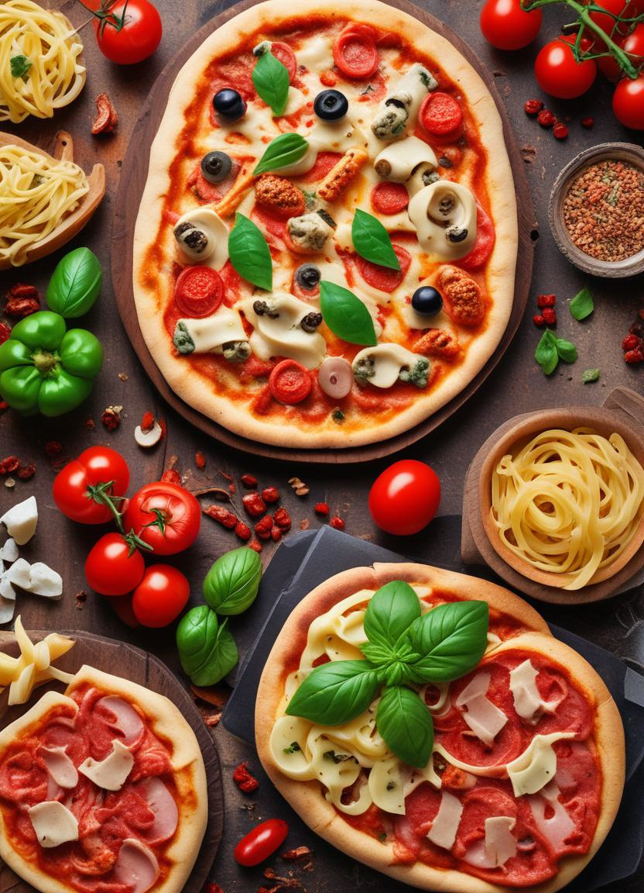

Trending Recipes
Daybreak Dining & Nutrition
Breakfast
Street Food
Diet Food
Dessert
About Us
Contact Us
Access to the diverse recipes
Cooking Royalty provides access to a wide range of diverse recipes,
ensuring you never run out of culinary inspiration from traditional dishes to modern creations.
A Taste of China: Classic Recipes to Try at Home

▷ Tomato Soup
▷ Sweet Corn Soup
▷ Hot and Sour Soup
▷ Veg Manchow Soup
▷ Veg Manchurian
▷ Paneer Chilli
▷ Veg Crispy
▷ Veg Spring Roll
▷ Chinese Bhel
Spice Route to Punjab: Flavorful North Indian Dishes

▷ Paneer Tikka Masala
▷ Shahi Paneer
▷ Paneer Butter Masala
▷ Paneer Lababdar
▷ Kadhai Paneer
▷ Palak Paneer
▷ Dhaba Style Tawa Paneer
▷ Paneer Handi
▷ Paneer Angara
▷ Paneer Bhurji
From Idli to Dosa: South Indian Culinary Treasures

▷ Rasam
▷ Medu Vada
▷ Rava Idli
▷ Masala Dosa
▷ Rava Uttapam
▷ Upma
▷ Sambhar
▷ Coconut Chutney
Gujarat on a Plate: Traditional Kathiyawadi Dishes

▷ Sev Tamatar
▷ Baigan Ka Bharta
▷ Dal Dhokli
▷ Methi Thepla
▷ Dal Khichdi
▷ Khaman
▷ Khandvi
Pizza & Beyond: Crafting Authentic Italian Classics

▷ Masala Macroni
▷ White Sauce Pasta
▷ Veg Lasagna
▷ Tawa Pizza
▷ Paneer Makhni Pizza
▷ Cheesy Crust Pizza